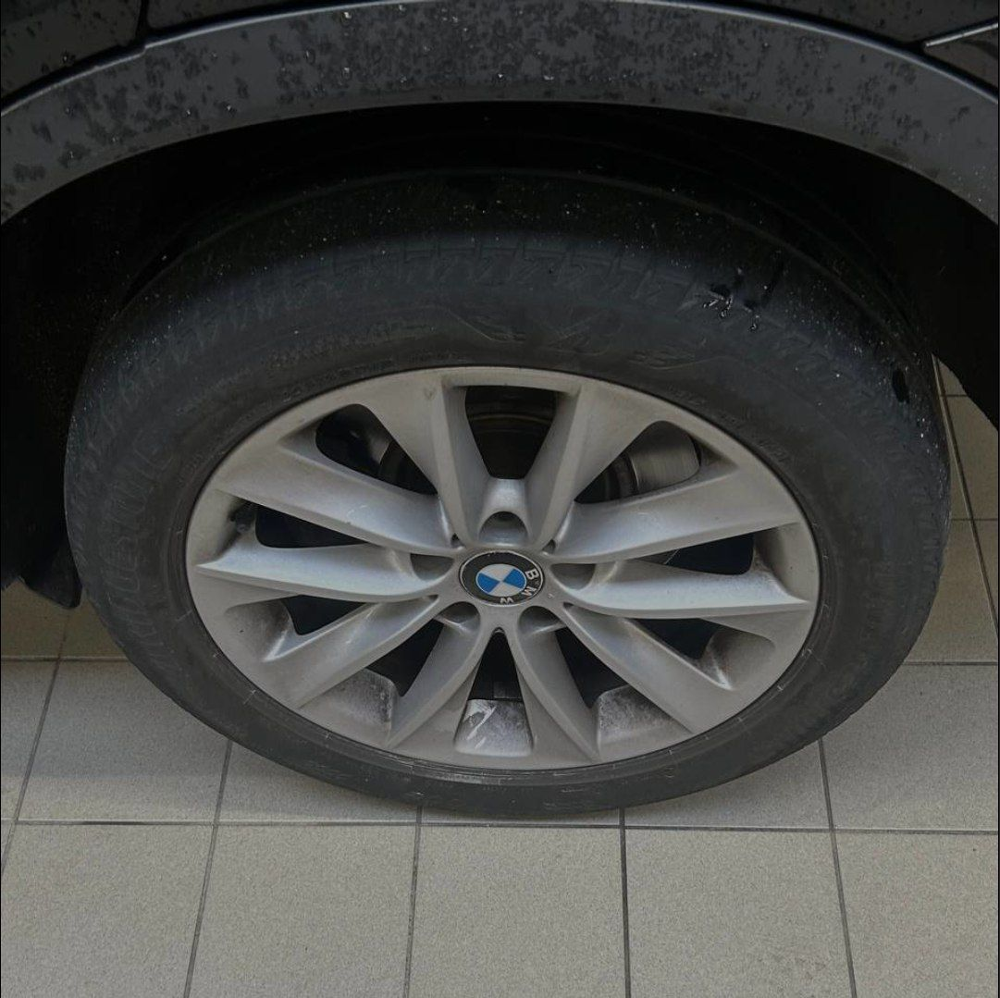

Home / Brakes and suspension
BMW Wheel Bolts: How to Tighten Them Correctly
Quick answer
Thread each bolt in by hand first, carefully and straight, then tighten them in a crisscross order, one opposite the other and never the one beside it. Finish with a torque wrench set to the value in your manual. Many modern BMWs are listed at 140 Nm (103 lb-ft), but some models differ. Re-check the torque after the first drive.

What you need
- A torque wrench that covers your car's value
- The correct socket for your wheel bolts
- A brush or cloth to clean the hub face and the bolts
- Jack stands, and a safe lift. See BMW Jack Points
Step by step
- Make sure the hub face and the wheel mounting surface are clean, and that the bolt threads are clean and dry. Don't oil or grease them unless your manual says to.
- Lift the wheel onto the hub and line up the holes.
- Start each bolt by hand, carefully and straight, so it doesn't cross-thread. Don't start bolts with a power tool.
- Snug the bolts in a crisscross order: tighten one, then the one opposite it, not the one next to it.
- Lower the car so the tire is on the ground, then tighten each bolt to the specified torque with the torque wrench, in the same crisscross order.
- Re-check the torque after about 50 miles (80 km).
What torque to use
Many modern BMWs are listed at 140 Nm (103 lb-ft), but some models are listed lower, so use the figure in your manual or the wheel documentation, and don't guess. Use a torque wrench for the final tightening, not an impact wrench.
Why opposite bolts
Tightening in a crisscross order pulls the wheel evenly onto the hub. Going around in a circle can seat the wheel unevenly, which can cause vibration and put uneven stress on the rotor.
Common mistakes
- Tightening in a circle instead of crisscross
- Using an impact wrench for the final tightening
- Cross-threading a bolt by starting it with a power tool
- Dirty or oiled threads and a dirty hub face
- Skipping the re-check after the first drive
- Using the wrong torque value
Safety note. A loose wheel is an emergency. If a wheel vibrates, clunks or feels loose after the work, stop and check the bolts at once.
FAQ
How tight should BMW wheel bolts be?
Many modern BMWs are listed at 140 Nm (103 lb-ft), but check your manual, because some models differ.
Can I use an impact wrench on wheel bolts?
It is fine to speed up loosening, but use a torque wrench for the final tightening.
Why do I tighten the bolts in a crisscross order?
It pulls the wheel evenly onto the hub, which helps avoid vibration and uneven stress.
Do I need to re-check the torque?
Yes, after about 50 miles (80 km). Wheels can settle on the hub.
Can I reuse the wheel bolts?
If they are undamaged and clean, many people do. Replace any bolt with damaged threads or a damaged seat.
This guide is general information based on personal experience, not professional advice. Check your own car's manual for exact specs and read the disclaimer before starting any job.